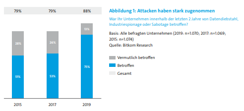
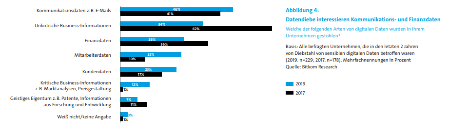

3 von 4 Unternehmen sind schon Opfer geworden von Cyberangriffen. 75% der Unternehmen waren schon betroffen von Cyberangriffen in 2019, weitere 13% wurden vermutlich betroffen, weil man nicht immer den Cyberangriff feststellen kann, während die Angriffe immer mehr über die Jahre anstiegen, desto wurden die Cyberangriffe immer besser und umfangreicher. Die Angriffe steigen in allen großen Klassen, aber besonders liegen die Firmen mit etwa 1-99 Mitarbeitern im Fokus. Auch große Unternehmen werden angegriffen so geben große Firmen an mit mehr als 500 Mitarbeiter betroffen zu sein, dass wären 78% der Unternehmen. Eine Ansteigung von 22% ist erkennbar.
Datendiebstahl ist das häufigste Delikt. In 46% der Fälle sind es sensible Daten wie Kommunikationsdaten wie E-Mails. 26% sind Finanzdaten, 25% Mitarbeiterdaten, 23% Kundendaten. Kritische Geschäftsinformationen wie Marktanalysen oder Preisgestaltung sind bei jedem achten Unternehmen (12 Prozent) in kriminelle Hände gefallen.
7 von 10 Unternehmen sind zu schaden gekommen in den vergangen 2 Jahren(anstieg um 27% von 2017 zu 2019).1/4 beobachtete angriffe auf Passwörter und Infizierung mit Schadsoftware und Phishing. Es ergibt sich das Hacker immer besser ausgerüstet werden und besser werden, wie auch mehr Zeit und Qualität investieren in ihre Werke. Daraus folgt das Cyberangriffe immer mehr zu nehmen.
hier gehts nach oben